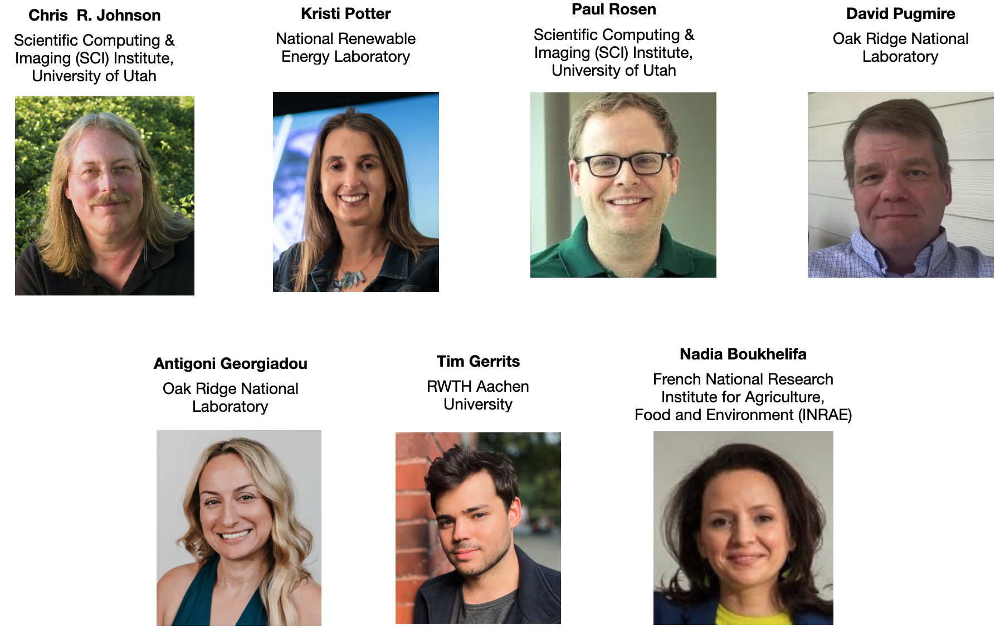

IEEE Workshop on Uncertainty Visualization: How to Make it Interpretable, Integrable, and Accessible in conjunction with IEEE VIS 2026, Boston, USA
Organization Workshop Chairs General Chair Tushar M. Athawale Oak Ridge National Laboratory Tushar M. Athawale Oak Ridge National Laboratory Workshop Co-chairs  Workshop Program Committee TBD